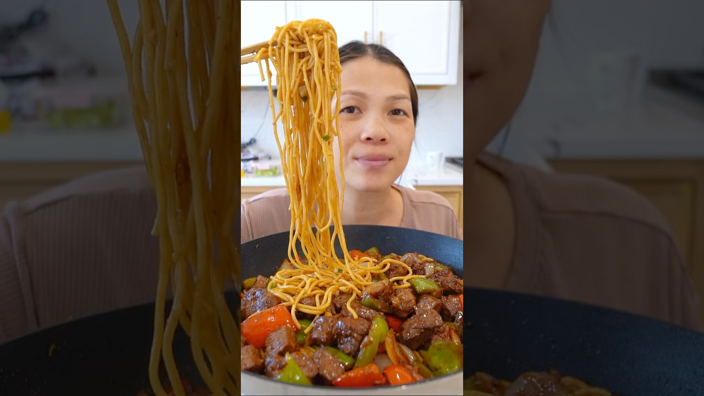

| Course | Main Dish |
| Categories | Beef, Noodle |
| Collections | Wok, Alissa Nguyen |
| Source | Alissa Nguyen – YouTube |
| Notes | see “Notes” below |

1 lb spaghetti noodles, cooked & drained
1 stick unsalted butter
4 Tbsp minced garlic (or more)
Chopped scallions
Parmesan cheese (optional)
2 Tbsp brown sugar
2 Tbsp oyster sauce
1 Tbsp fish sauce
1/2 Tbsp soy sauce
1/2 tsp chicken bouillon
Dark soy sauce (for color)
1 lb beef (use a cut like New York strip, ribeye, or filet)
2 bell peppers, any color
1 yellow onion
2 Tbsp butter
Oil, for cooking
2 Tbsp olive oil
2 Tbsp oyster sauce
1 1/2 Tbsp Maggi seasoning or soy sauce
2 Tbsp minced garlic
1 tsp sugar
1 tsp black pepper
Cook the spaghetti according to package directions; drain and set aside.
In a pan or wok, melt the butter over medium heat.
Add the minced garlic and cook until fragrant.
Stir in all the sauce ingredients.
Once the sauce begins to bubble, add the cooked noodles and toss until fully coated.
Finish with chopped scallions and Parmesan, if using.
Cut the beef into cubes and marinate with everything listed under Marinade. Let it sit for 30 minutes.
In a pan over high heat, add a little oil and place the beef in a single layer. Let it sear for 2 minutes without touching it, then "shake" the pan to flip and sear the other side for another 2 minutes. Remove and set aside. If cooking a lot, do this in two batches so the pan doesn't overcrowd — overcrowding drops the heat and causes the beef to steam instead of sear.
In the same wok, add the bell peppers and onion and cook to your preferred doneness. Add the beef back in along with 2 Tbsp butter. Turn off the heat and let the residual heat melt the butter and coat everything.
Serve with your preferred carb — the video uses the garlic noodles above.
For the shaken beef, don't crowd the pan; sear in batches to keep the heat high.
The garlic noodle sauce uses dark soy sauce purely for color; add to taste.